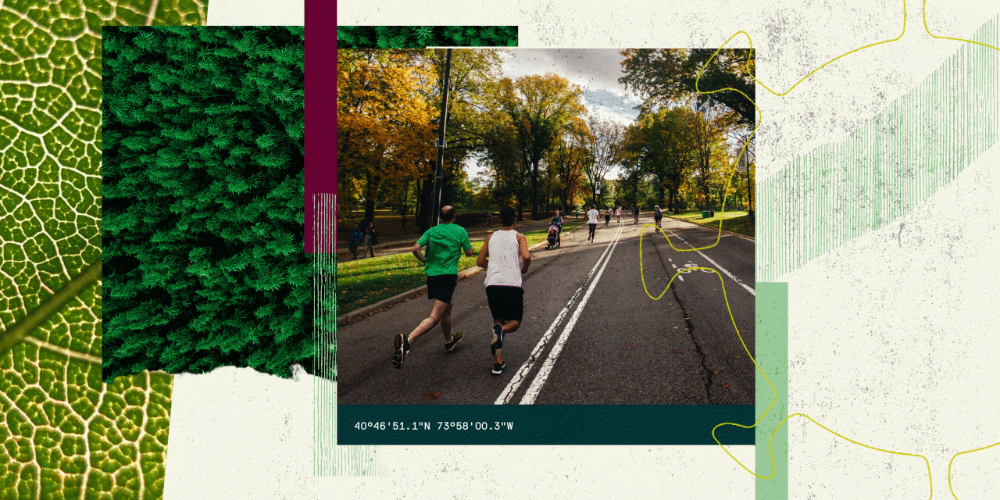

NatureScore Designing a new way to measure nature’s value at every address.
Overview
Client
NatureQuant
Role
Lead Product Designer
Website
View Project ↗- UI/UX Design
- Rapid Prototyp
- Design Systems
- Data Visualization
As urban environments grow and people spend more time indoors, understanding how nature affects health, real estate, and community equity became increasingly important. NatureQuant needed a product that could translate complex GIS and environmental data into actionable insight.
I led the design and launch of NatureScore®, NatureQuant’s first product. The work spanned brand identity, custom maps (GIS data), website launch, white papers and pitch decks, and feature ideation.
The product transforms raw environmental and GIS data into a visual, easy-to-understand score (0-100) that reflects the quantity and quality of natural elements around any location. By combining satellite imagery, land use data, pollution measures, tree canopy, parks, and computer vision, NatureScore helps professionals and individuals alike understand how “naturerich” a place really is.
NatureScore became the foundation of that vision: a first product that would set the tone for future apps (such as NatureDose®) and open data tools, and position NatureQuant as a serious player in nature + health + data.

Translate complex GIS and environmental data into simple, human-readable insights.
Build a brand and design system that feels both scientific and accessible.
Design a scalable foundation for NatureQuant’s future data and consumer products.
Brand & Identity
I designed the logo, visual system, and tone for NatureScore—creating an identity that felt scientific, accessible, and forward-looking.
Data Mapping & GIS
The system blends satellite infrared, tree canopy metrics, air/noise/light pollution, land classifications, and computer vision from aerial and street imagery to generate a consistent, data-driven score.
Website & Launch Materials
I created the launch website, white papers, and pitch decks targeting both research and enterprise customers, ensuring clarity and credibility in communication.
Feature Ideation
Collaborated on features such as address lookup, heat-map visualizations, real-time mapping layers, and printable reports for analysts and planners.
Design System Integration
Established a unified design language—colors, icons, typography, and visuals—to align the web interface, mapping tools, and marketing materials.
The design challenge was two-fold: make very technical data visually digestible, and build trust through clarity.
Maps show scores using a red-to-green leaf scale, clearly signaling how “nature-rich” each location is. Reports and visuals were designed for planners, researchers, city officials, and individuals alike—keeping the data front and center with a clean, grid-based layout and strong typography.
NatureScore became a foundational product for NatureQuant, enabling new conversations about nature, health, and equity.
It supports mapping tools down to 10-meter resolution, custom polygon data, and layered metrics for environmental justice applications. Nature planners use it to target tree-planting in underserved neighborhoods; real estate analysts use it to evaluate green-space value; and public health researchers use it to study nature exposure outcomes.
This project showed me that design is more than aesthetics—it’s about creating tools that translate complexity into clarity. When data is dense, design must be generous. NatureScore turned dense GIS layers, pollution indices, and machine-learning outputs into something people can understand and use.
It remains an early but important step in helping society see nature not as a luxury but as a measurable asset.